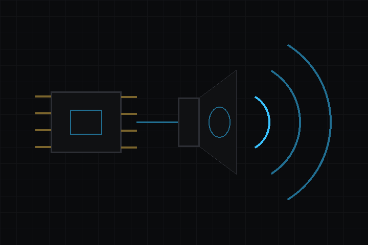

- 다음에 의해 생성됨 :
 1.18.0
1.18.0
|
deki-audio 0.21.0
Deki 패키지 레퍼런스
|

오디오 재생 주변 장치. I²S로 연결하는 MAX98357 D급 앰프.
저장소: github.com/dekiengine/deki-audio · 최신 릴리스: 0.20.0 · 엔진 0.19.0 이상 필요 · 의존: deki-i2s
DekiEditor --packages-add deki-audio <project> 또는 패키지 관리자로 설치합니다. 엔진 자체의 컴포넌트와 C++ API는 Deki 문서에 있습니다.
에디터에는 Audio (Speaker / PCM playback)(으)로 표시됩니다.
| 컴포넌트 | 카테고리 | 설명 |
|---|---|---|
| MAX98357AudioComponent | 센서 | MAX98357A I2S 앰프로 소리를 재생합니다. |
빌드에서 뺄 수 있는 부분입니다. define이 있는 기능은 그 define으로 켜고 끄며, 나머지는 컴포넌트와 함께 제거됩니다.
| 기능 | define | 기본값 |
|---|---|---|
| MAX98357A (I²S class-D mono amp, 16-bit PCM) | DEKI_FEATURE_AUDIO_MAX98357 | 켜짐 |
MAX98357A I2S 앰프로 소리를 재생합니다.
인스펙터 이름: MAX98357A 오디오 · 카테고리: 센서 · 유형: DekiAudio::MAX98357AudioComponent
| 속성 | 유형 | 기본값 | 제약 | 설명 |
|---|---|---|---|---|
| i2sPort | int32 | 0 | 0~1 | 칩의 I2S 컨트롤러 중 어느 것이 앰프를 구동하는지 지정합니다. 대부분의 보드는 하나만 사용합니다. |
| bclkPin | int32 | 39 | 0~48 | 비트 클럭(BCLK)을 전달하는 GPIO입니다. 오디오 비트마다 한 번씩 틱합니다. |
| lrclkPin | int32 | 40 | 0~48 | 워드 선택 라인(LRCLK 또는 WS)을 전달하는 GPIO로, 왼쪽과 오른쪽 샘플을 구분합니다. LRC로 표기한 보드도 있습니다. |
| dinPin | int32 | 5 | 0~48 | 앰프로 오디오 데이터를 보내는 GPIO(DIN)입니다. 실제로 소리가 전달되는 라인입니다. |
| sampleRate | int32 | 16000 | 8000~48000 | 초당 샘플 수입니다. 16 kHz는 음성과 효과음에 충분하고 메모리도 적게 듭니다. 44100은 CD 레이트이며 대역폭이 거의 세 배 듭니다. |
| channels | int32 | 1 | 1~2 | 1은 모노, 2는 스테레오입니다. MAX98357은 모노 앰프이므로, 다른 채널용으로 두 번째 앰프를 연결하지 않으면 스테레오 소리는 모노로 합쳐집니다. |
| initialVolume | int32 | 80 | 0~100 | 시작 시 볼륨(0~100)입니다. 첫 소리가 재생되기 전에 적용되므로, 프로젝트가 최대 출력이 아닌 작은 소리로 시작할 수 있습니다. |
변경 내역은 영어로 되어 있습니다.
이전 릴리스: CHANGELOG.md
패키지의 리플렉션 데이터에서 생성했습니다(엔진 0.21.0). 속성 이름은 씬 파일에서 쓰는 키입니다. 이름을 바꿔도 별칭이 유지됩니다(호환성).